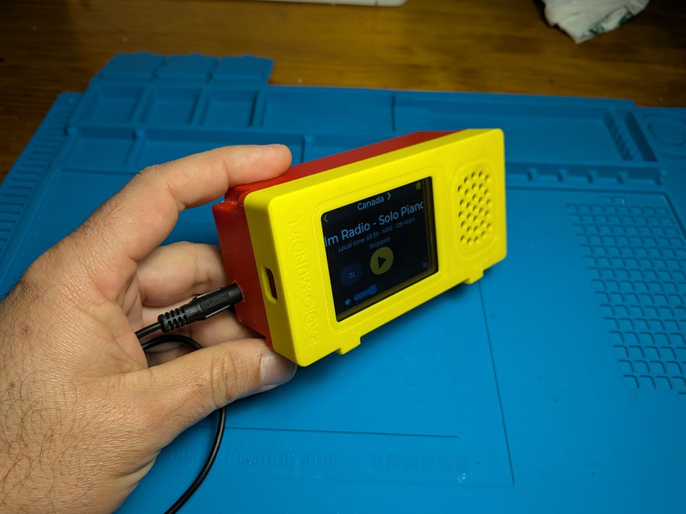
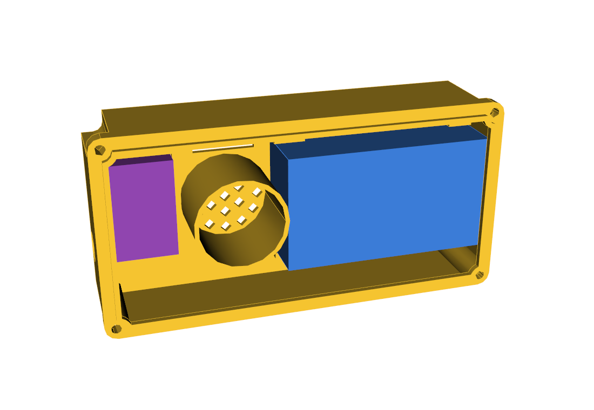
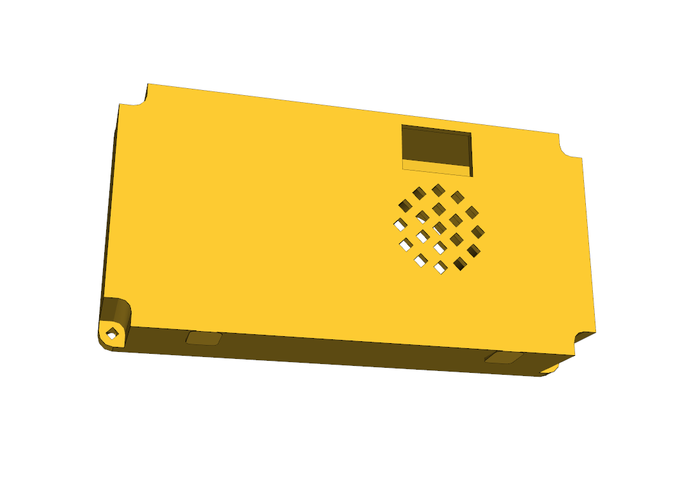
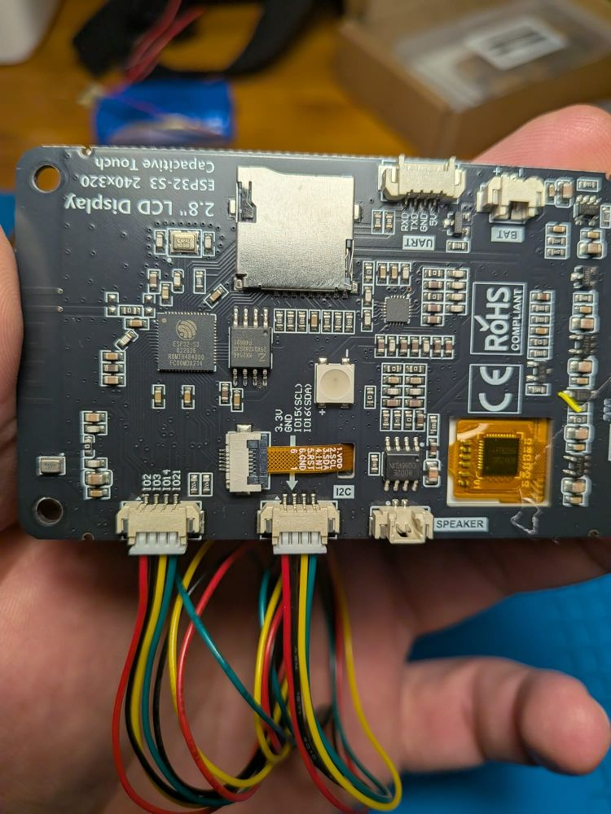
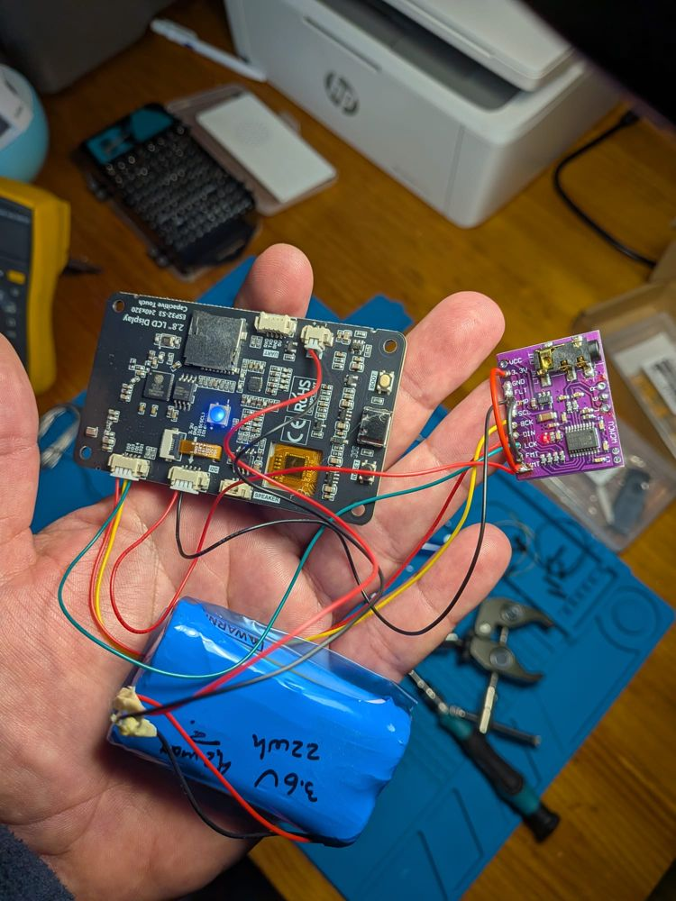
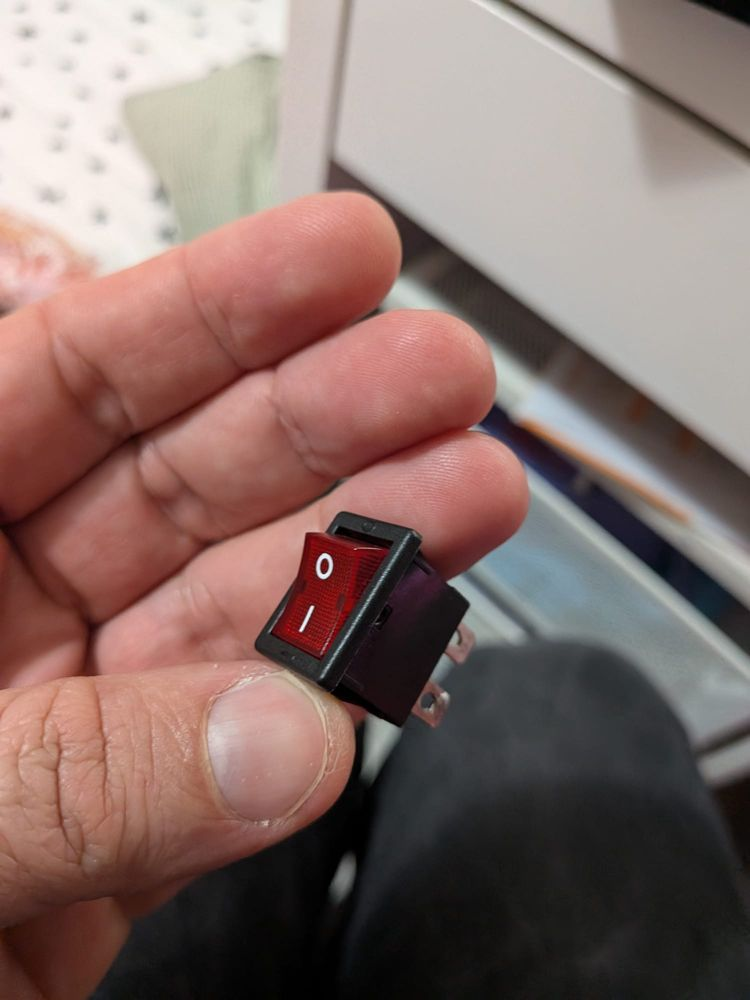
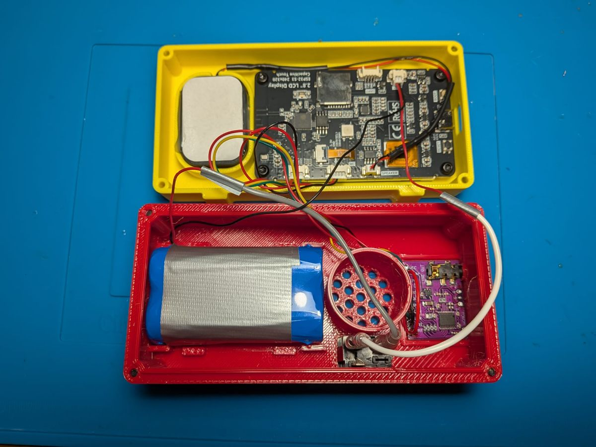
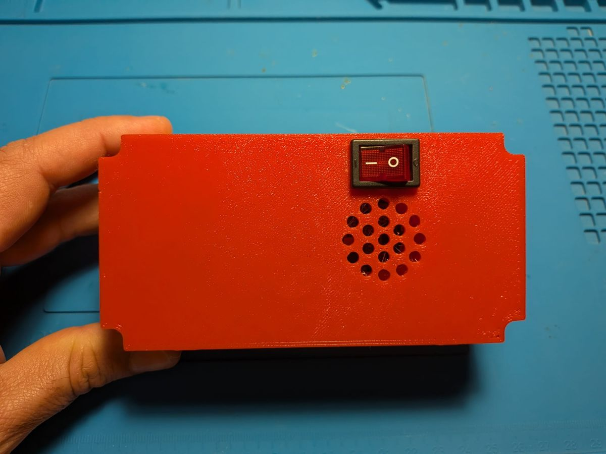
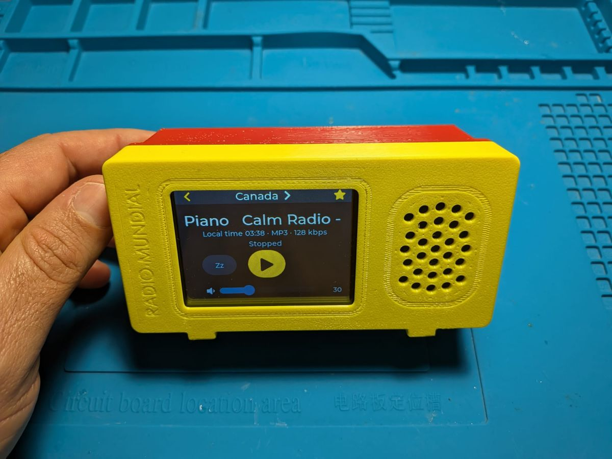

Radio Mundial: el montaje con «mochila»
Una mejora opcional de la radio pequeña: una tapa trasera más profunda con un DAC de salida de línea (para escucharla por cualquier amplificador, altavoces con entrada AUX o auriculares), una batería y un interruptor para la batería. El frontal de la carcasa no cambia.

1. Piezas
Todo lo del montaje básico y, además:
| Pieza | Notas |
|---|---|
| Placa DAC PCM5102A, tipo WCMCU-5102, con jack de 3,5 mm | 32,5 × 24 mm. La mochila está hecha para esta placa: su jack sale por un agujero del lateral. |
| Batería: 2 celdas 18650 en paralelo (1S, 3,7 V) en un portapilas con placa de protección | Hasta 68 × 38 × 22 mm. Nunca en serie. También vale una sola celda o una batería LiPo. |
| Interruptor basculante pequeño | Cuerpo de 20 × 13 mm y 23 mm de fondo, a presión. De al menos 1 A. Si tiene luz, su tercera pata se deja sin conectar. |
| Cable de 1,25 mm de 2 pines | Para el conector BAT de la placa. |
| Un segundo cable de 1,25 mm de 4 pines | El kit trae uno; el DAC necesita dos. |
| 4 tornillos M3 × 10 mm | En lugar de los 4 M3 × 8 de la tapa plana. |
| 2 bridas de hasta 4,8 mm de ancho | Para sujetar la batería. |
| Pegamento caliente, soldador, tubo termorretráctil y polímetro | El polímetro sirve para comprobar los cables antes de enchufar nada. |
2. Imprimir la mochila
PETG, con el fondo de la mochila sobre la cama y la boca hacia arriba, sin soportes. Los mismos ajustes que el resto de la carcasa.
Descargar los archivos de la mochila


3. Conectar el DAC
El DAC usa dos de los conectores pequeños de la placa. Guía completa paso a paso, con esquemas y dos programas de prueba: kit de conexión del DAC (PDF en español).
| Conector de la placa | Pin | DAC (WCMCU-5102) |
|---|---|---|
| IO2 IO3 IO14 IO21 | IO2 | DIN |
| IO2 IO3 IO14 IO21 | IO14 | BCK |
| IO2 IO3 IO14 IO21 | IO21 | LCK |
| IO2 IO3 IO14 IO21 | IO3 | sin conectar: aíslalo |
| I2C | 3V3 | pin 3.3V |
| I2C | GND | GND |
| I2C | SCL, SDA | sin conectar: aíslalos |
| En el propio DAC | SCK a GND (en algunas placas pone «SCL»): imprescindible. FLT, DMP y FMT a GND; XMT a 3.3V. VCC sin conectar. | |
identificar del kit te ayuda a encontrar cada uno.


4. Batería e interruptor
- Carga las dos celdas a la misma tensión antes de ponerlas en paralelo.
- El interruptor va en el cable + de la batería, entre el portapilas y la placa.
- Conecta la batería al conector BAT, nunca al de SPEAKER. El esquema de la placa marca la polaridad: el pin 1 es el + y el pin 2 es GND. Compruébalo con el polímetro en tu cable antes de enchufarlo: una batería al revés puede estropear la placa.
- La placa carga la batería por el USB-C a unos 290 mA. Dos celdas de 3000 mAh tardan unas 20 horas en cargarse desde vacías.
- Interruptor apagado: la batería queda desconectada. La radio sigue funcionando por el USB-C, pero la batería no se carga.
- Interruptor encendido: la radio funciona con la batería al desenchufar el USB-C, y la carga al enchufarlo.


5. Montaje
- Encaja el interruptor en su hueco del fondo de la mochila.
- Pega el DAC con unos puntos de pegamento caliente en su cara plana de abajo, con el jack apretado contra su agujero del lado del USB-C. Sin pegamento en el jack ni en los pines.
- Mete la batería entre el tubo de luz y la pared del lado del altavoz, algo inclinada y primero por el lado del altavoz. Sujétala con las dos bridas por debajo de los puentecitos de cada lado. Nada de pegamento caliente en la batería.
- Cierra la mochila contra el frontal con los 4 tornillos M3 × 10 mm. Su borde la centra en el frontal.



6. Uso
Instala Radio Mundial v0.6.0 o posterior desde la página de instalación, igual que en el montaje básico.
- Sonido por el DAC: abre Ajustes (mantén pulsado el título del mapa) y toca el icono del altavoz de la columna de la derecha: se pone amarillo y dice DAC. Tócalo otra vez para volver al altavoz integrado. Mientras está el DAC, el altavoz integrado queda en silencio y la pantalla de reproducción dice Sonando por el DAC.
- Nivel de batería: un icono abajo a la izquierda cuando la batería se va gastando. Con la batería llena no sale ningún icono.
- Interruptor apagado: con el USB-C enchufado y el interruptor apagado, sale una batería gris con una ✕. En Ajustes, arriba a la derecha, la batería aparece como ON u OFF.
- Auriculares: el DAC es una salida de línea. Funciona con auriculares, pero empieza con el volumen bajo.


7. Problemas frecuentes
| Problema | Qué probar |
|---|---|
| No suena nada | Mira si en Ajustes pone DAC: entonces el sonido va al jack, no al altavoz. |
| El DAC no suena | Revisa SCK a GND en el DAC, los cables de 3.3V y GND y los tres de audio. El programa de prueba tono del kit pone un tono en cada canal. |
| La clavija no entra hasta el fondo | La goma de algunas clavijas es gruesa: el agujero es de 10 mm. Comprueba que el jack del DAC está apretado contra la pared. |
| Sale la ✕ con el interruptor encendido | Escribe RMV en un monitor serie (115200 baudios) y cuenta los números en GitHub. |
| Quitaste la batería para siempre y la ✕ sigue | En Ajustes, toca dos veces el texto pequeño de arriba a la derecha: la radio olvida la batería. |